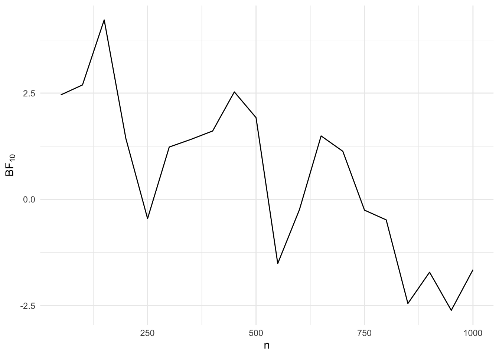

# Load packages
library(MASS)
library(tidyverse)
library(viridis)
library(brms)
library(emmeans)
# Set the default ggplot theme
theme_set(theme_minimal())Sequential analyses
This section is about performing sequential analyses.
Bayesian
Let’s simulate data for a scenario in which we have 5 different between-subjects conditions. The conditions differ from each by a small amount and for simplicity’s sake each condition has a standard deviation of 1.
To simplify the code for demonstrating a sequential analysis, we’ll first simulate all the data and then draw samples from it, rather that simulating new data for each step.
# Set the simulation parameters
Ms <- c(0, 0.1, 0.2, 0.3, 0.4)
SDs <- 1
n <- 1000
labels <- c("A", "B", "C", "D", "E")
# Produce the variance-covariance matrix
Sigma <- matrix(
nrow = length(Ms),
ncol = length(Ms),
data = c(
SDs^2, 0, 0, 0, 0,
0, SDs^2, 0, 0, 0,
0, 0, SDs^2, 0, 0,
0, 0, 0, SDs^2, 0,
0, 0, 0, 0, SDs^2
)
)
# Simulate
m <- mvrnorm(n = n, mu = Ms, Sigma = Sigma, empirical = TRUE)
# Prepare data
colnames(m) <- labels
data <- as_tibble(m)
data <- pivot_longer(
data = data,
cols = everything(),
names_to = "condition",
values_to = "DV"
)
data <- mutate(data, id = 1:n(), .before = condition)Now that we have some data we can draw samples from it, run a model, calculate the Bayes factor, and store the Bayes factor together with the cumulative sample size so we can create a plot for how the Bayes factor changes as we ‘recruit’ more participants.
n_step <- 50
bayes_factors <- tibble()
for (i in 1:(n / n_step)) {
# Draw a sample
sample <- slice_head(data, n = i * n_step)
# Run the brm model
model <- brm(
formula = DV ~ 0 + Intercept + condition,
data = sample,
family = gaussian(),
prior = c(
set_prior(coef = "Intercept", prior = "normal(0, 1)"),
set_prior(class = "b", prior = "normal(0, 1)"),
set_prior(class = "sigma", prior = "normal(1, 1)")
),
sample_prior = TRUE
)
# Calculate the BF of a contrast
contrast <- hypothesis(model, "conditionD - conditionB = 0")
# Add the information to the bayes factors data frame
bayes_factors <- bind_rows(
bayes_factors,
tibble(
step = i,
n = i * n_step,
BF = contrast$hypothesis$Evid.Ratio
)
)
}Now we have a data frame that contains the Bayes factors for each step, so we can plot how the Bayes factor changes as we recruit more participants.
ggplot(bayes_factors, aes(x = n, y = log(BF))) +
geom_line() +
labs(x = "n", y = expression(BF[10])) +
theme_minimal()